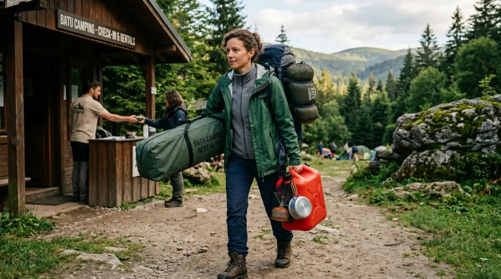

Informasi harga tiket camping terbaru 2026 di pintu masuk Batu Camping Ground.
Informasi harga tiket camping terbaru 2026 di pintu masuk Batu Camping Ground.
Pernah nggak sih kamu merasa penat banget dengan tumpukan deadline di kantor, revisi dari klien yang nggak kelar-kelar, atau sekadar drama meeting pagi yang bikin sakit kepala? Kalau rasanya kepala sudah mau meledak, itu tandanya kamu butuh healing sejenak. Berkemah di alam terbuka bisa jadi obat paling manjur. Nah, ngomongin soal kemah, Kota Batu selalu jadi primadona. Udaranya sejuk, pemandangannya bikin pikiran jernih lagi.
Tapi masalahnya, merencanakan liburan dadakan sering berujung drama baru. Bayangkan kamu sudah jauh-jauh ambil cuti, sampai di lokasi eh ternyata tenda full booked atau harganya di luar ekspektasi. Nyesel banget, kan? Niatnya mau buang stres, malah tambah pusing. Makanya, biar momen melepaskan penatmu berjalan mulus, penting banget buat riset harga tiket camping Batu dari sekarang. Yuk, kita bedah daftar lengkapnya supaya kamu bisa booking lebih awal dan liburan dengan tenang!
Kenapa Kota Batu Selalu Jadi Pelarian Favorit Pekerja Kantoran?
Kalau dipikir-pikir, rutinitas harian kita itu lumayan menyita kewarasan. Berangkat pagi menembus macet, seharian duduk menatap layar monitor dengan AC sentral yang dinginnya bikin masuk angin, lalu pulang malam dengan energi yang sudah habis. Tidak heran kalau saat akhir pekan atau musim libur tiba, kita mencari pelarian yang bertolak belakang dengan suasana kantor.
Kota Batu menawarkan semua hal yang tidak bisa kita dapatkan di kubikel ruang kerja. Udara pegunungan yang segar tanpa polusi, suara serangga malam yang jauh lebih merdu daripada suara notifikasi grup WhatsApp kantor, dan tentu saja, pemandangan hijau yang mengistirahatkan mata. Memilih tempat camping itu sebenarnya mirip banget sama memilih vendor untuk proyek kantor; ada harga, ada rupa, dan pastinya butuh kejelasan spesifikasi di awal agar tidak ada biaya tersembunyi. Oleh karena itu, aku sudah merangkum data terbaru dari berbagai campground terpercaya di Batu agar kamu punya referensi yang valid, transparan, dan akurat.
Daftar Lengkap Harga Tiket Camping Batu (Update 2026)
Untuk memudahkanmu melihat perbandingan, aku menyusun daftar ini sejelas mungkin. Datanya sudah diatur sedemikian rupa sehingga jika kamu membayangkannya, ini sebersih melihat layout berbasis grid atau table dari framework seperti Bootstrap—rapi, responsif, dan mudah dibaca informasinya.
1. Batu Camping Ground (Rekomendasi Utama)
Bagi kamu yang mencari keseimbangan antara keindahan alam dan fasilitas yang memadai, Batu Camping Ground adalah jawaban yang paling pas. Transparansi informasi di sini sangat baik, jadi kamu bisa menghitung budget dengan presisi.
Satu hal yang krusial jika kamu ingin memesan kendaraan atau membagikan titik kumpul ke teman-temanmu: pastikan alamat yang kamu tuju valid. Lokasi persisnya ada di Jl. Raya Sumber Brantas No. 123, Bumiaji, Kota Batu, Jawa Timur. Jangan lupa catat juga kode pos-nya (65336) karena detail alamat jalan (street address) dan kode pos (postal code) yang akurat ini sangat penting agar navigasi peta digitalmu presisi dan rombonganmu tidak nyasar ke bukit sebelah.
- Tiket Masuk (HTM): Rp 25.000 / orang / malam.
- Sewa Lahan (Bawa tenda sendiri): Rp 35.000 / kavling.
- Sewa Tenda Dome (Kapasitas 4 orang): Rp 150.000 / malam (sudah termasuk matras).
- Parkir Inap: Motor Rp 10.000, Mobil Rp 20.000.
2. Pagupon Camp & Nature
Tempat ini cocok buat kamu yang ingin suasana sedikit lebih eksklusif. Konsepnya memadukan alam dengan kenyamanan modern, sangat pas kalau kamu bawa tim satu divisi untuk bonding tipis-tipis di luar agenda kantor.
- Tiket Masuk (HTM): Rp 30.000 / orang / malam.
- Sewa Tenda Premium: Rp 250.000 / malam (termasuk sleeping bag tebal, bantal, dan lampu tenda).
- Paket Barbeque: Mulai dari Rp 100.000 / paket (bisa untuk 2-3 orang).
3. Pine Woods Batu Areana
Nah, kalau yang ini surganya para pencinta hutan pinus. Suasananya sangat teduh di siang hari. Cocok buat kamu yang cuma mau rebahan di hammock sambil mematikan notifikasi email.
- Tiket Masuk (HTM): Rp 20.000 / orang / malam.
- Sewa Lahan: Rp 25.000 / tenda.
- Sewa Perlengkapan Tambahan: Hammock (Rp 15.000), Kompor portable + gas (Rp 30.000).
Fasilitas Apa Saja yang Umumnya Didapat?

Fasilitas penunjang di area perkemahan yang menjamin kenyamanan pengunjung selama bermalam di alam.Seperti halnya memastikan sebuah ruang meeting punya proyektor dan colokan yang cukup, memastikan fasilitas campground juga wajib hukumnya. Secara umum, tempat-tempat di atas sudah menyediakan standar kenyamanan yang sangat layak untuk ukuran wisata alam di tahun 2026:
- Kamar Mandi Bersih & Air Hangat: Beberapa pengelola sudah mengerti bahwa pengunjung dari kota benci mandi air super dingin di pagi hari. Ketersediaan air bersih dan toilet yang layak adalah prioritas utama mereka.
- Akses Listrik: Niatnya memang mau disconnect dari pekerjaan, tapi baterai smartphone atau kamera tetap harus menyala untuk dokumentasi, kan? Sebagian besar area kini menyediakan titik colokan listrik di beberapa pos terpadu.
- Keamanan 24 Jam: Tidak perlu khawatir barang-barangmu hilang saat kamu terlelap. Pengelola wisata saat ini sudah menerapkan sistem keamanan shift malam layaknya penjagaan di gedung perkantoran.
- Area Parkir Luas: Mobil keluargamu atau deretan motor teman-teman tongkrongan dijamin aman karena lahan parkir sudah didesain memadai dan tidak bercampur dengan area mendirikan tenda.
Tips Memilih Tempat Camping Biar Nggak Menyesal
Supaya ekspektasi liburanmu sesuai dengan realita, ada beberapa hal teknis yang harus kamu perhatikan. Anggap saja ini Standar Operasional Prosedur (SOP) sebelum berangkat liburan:
- Cek Kapasitas dan Booking Lebih Awal: Layaknya tiket kereta saat Lebaran, lapak camping dengan view terbaik akan ludes terjual berminggu-minggu sebelumnya. Jangan gunakan sistem go show alias datang langsung bayar di tempat saat high season. Risiko ditolaknya sangat tinggi.
- Sesuaikan dengan Kondisi Fisik Peserta: Kalau kamu berangkat dengan teman sekantor yang jarang olahraga, pilih campground yang mobilnya bisa parkir langsung di sebelah tenda (campervan style). Jangan pilih lokasi yang mengharuskan trekking mendaki bukit selama satu jam, bisa-bisa mereka minta resign berjamaah saking capeknya.
- Siapkan Pakaian Tempur: Suhu malam di Kota Batu bisa anjlok drastis. Bawa jaket tebal, kaus kaki ganda, dan kupluk. Dinginnya gunung itu beda dengan dinginnya AC ruang direktur.
Kesimpulan: Jangan Tunda Rencanamu!
Pekerjaan memang nggak akan pernah ada habisnya. Kalau kamu menunggu semua task di Trello hijau semua baru mau liburan, percayalah, momen itu nggak akan pernah datang. Waktu terus berjalan, dan jatah cutimu punya masa kedaluwarsa.
Dari informasi daftar harga tiket camping Batu di atas, kamu sudah punya gambaran jelas tentang budget dan fasilitas yang akan didapat. Jangan biarkan rencana liburan sekadar jadi obrolan wacana di pantry kantor. Yuk, tentukan tanggalnya, booking tempatnya dari sekarang, dan siapkan dirimu untuk menghirup udara segar yang sesungguhnya. Kalau tidak diamankan dari sekarang, siap-siap saja gigit jari melihat Story temanmu yang sedang seru-seruan bikin api unggun, sementara kamu masih rebahan di kosan menatap atap. Mending rencanakan sekarang, kan?
FAQ (Pertanyaan yang Sering Diajukan)